на панели инструментов, чтобы открыть мастер добавления линии связи. С помощью мастера создайте линию связи 1 "Тестовая линия" (рис. 3). Затем нажмите кнопку
на панели инструментов, чтобы открыть мастер добавления линии связи. С помощью мастера создайте линию связи 1 "Тестовая линия" (рис. 3). Затем нажмите кнопку  и добавьте КП 1 "Тестовый КП" (рис. 4).
и добавьте КП 1 "Тестовый КП" (рис. 4).На рынке представлено огромное количество устройств, работающих в самых разных областях автоматизации, которые поддерживают обмен данными по протоколу Modbus. Modbus - это открытый коммуникационный протокол, использующий клиент-серверную модель, основанную на транзакциях, состоящих из запроса и ответа. Реализация поддержки протокола Modbus комплексом Rapid SCADA на порядок расширяет перечень устройств, с которыми может работать комплекс. Поддерживаются следующие режимы передачи данных: RTU, ASCII, TCP.
Общая последовательность настройки:
Далее приводится пошаговое описание подключения нового Modbus устройства.
В Администраторе нажмите конпку Новый проект, в открывшемся окне введите наименование проекта и нажмите кнопку OK. Чтобы процесс настройки полностью совпадал с текстом статьи, необходимо использовать пустой проект EmptyProject.ru-RU в качестве шаблона.
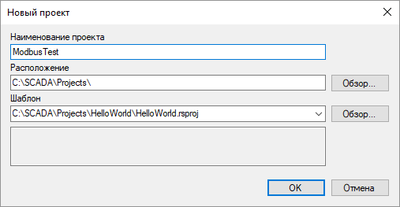
Рис. 1. Создание проекта
Разверните узел проводника проекта База конфигурации, откройте таблицу Объекты и добавьте новую строку для объекта 2 "Тестовый объект" (рис. 2). Щёлкните по кнопке на панели инструментов, чтобы открыть мастер добавления линии связи. С помощью мастера создайте линию связи 1 "Тестовая линия" (рис. 3). Затем нажмите кнопку и добавьте КП 1 "Тестовый КП" (рис. 4).
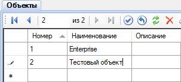
Рис. 2. Добавление объекта
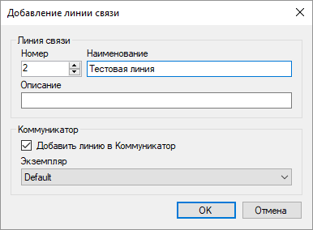
Рис. 3. Добавление линии связи
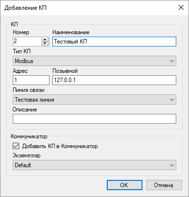
Рис. 4. Добавление КП
Обратите внимание на заполнение следующих полей при добавлении КП:
| Тип КП: | Modbus |
| Адрес: | Modbus адрес Вашего устройства, например, 1 |
| Позывной: | IP-адрес, если устройство подключено по сети Ethernet. В противном случае, пустой |
| Линия связи: | "Тестовая линия", которая была только что создана |
Откройте таблицы Линии связи и КП базы конфигурации, чтобы проверить, что созданная линия связи и КП успешно добавлены в таблицы. Убедитесь, что соответствующая линия связи и КП созданы в настройках Коммуникатора.
В проводнике проекта перейдите в настройки Коммуникатора, разверните узел созданной линии связи и дважды щёлкните по элементу Параметры линии. На странице основных параметров необходимо настроить канал связи (рис. 5). Для протокола Modbus обычно используется канал TCP-клиент или Последовательный порт.
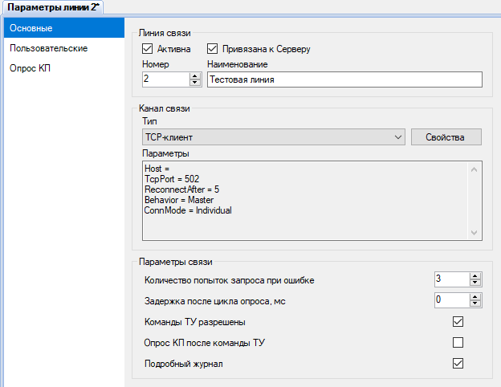
Рис. 5. Основные параметры линии связи
Если обмен данными выполняется через последовательный порт, то типичные параметры последовательного порта в зависимости от типа протокола Modbus указаны в таблице ниже. В режимах RTU и ASCII необходимо установить одинаковую скорость передачи данных в Коммуникаторе и на устройствах. На одной линии связи все устройства должны работать по протоколу Modbus одного типа и с одной скоростью.
| Modbus RTU | Modbus ASCII | Modbus TCP |
|---|---|---|
| 8 битов данных, с проверкой чётности (even – чёт.), 1 стоп-бит |
7 битов данных, с проверкой чётности (even – чёт.), 1 стоп-бит |
- |
| 8 битов данных, без проверки чётности, 2 стоп-бита |
7 битов данных, без проверки чётности, 2 стоп-бита |
- |
Далее перейдите на страницу Опрос КП и выберите в таблице "Тестовый КП" (рис. 6). Если не указывать время или период опроса КП, то опрос устройств производится циклически. Команды отправляются сразу после завершения очередного опроса.
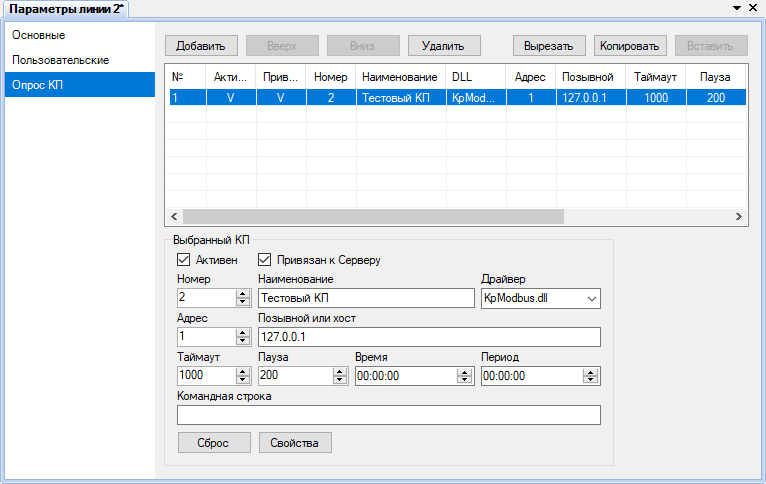
Рис. 6. Таблица опроса КП
Нажмите кнопку Свойства, чтобы открыть форму настройки дополнительных свойств КП (рис. 7). На форме свойств КП необходимо выбрать тип протокола Modbus, который должен быть указан в документации на устройство. В нашем случае Modbus TCP.
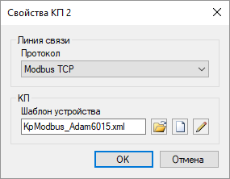
Рис. 7. Свойства КП
Нажмите кнопку  , чтобы выбрать существующий шаблон устройства, или кнопку
, чтобы выбрать существующий шаблон устройства, или кнопку  , чтобы создать новый шаблон. При нажатии на кнопку создания
, чтобы создать новый шаблон. При нажатии на кнопку создания  или на кнопку редактирования шаблона
или на кнопку редактирования шаблона  вызывается Редактор шаблонов устройств (рис. 8). В данной статье используется существующий шаблон KpModbus_Adam6015.xml, который был предварительно скопирован в директорию проекта C:\SCADA\Projects\ModbusTest\Instances\Default\ScadaComm\Config\
вызывается Редактор шаблонов устройств (рис. 8). В данной статье используется существующий шаблон KpModbus_Adam6015.xml, который был предварительно скопирован в директорию проекта C:\SCADA\Projects\ModbusTest\Instances\Default\ScadaComm\Config\

Рис. 8. Редактор шаблонов устройств
Шаблон устройства отражает структуру пакетов данных протокола Modbus. Данные, запрашиваемые от устройства, объединены в группы элементов (тегов). Группа элементов описывается наименованием, таблицей данных, адресом и количеством элементов. Для команд, если они поддерживаются устройством, необходимо задать наименование, таблицу данных, адрес и номер команды КП (от 1 и далее по порядку).
Наименования элементов и команд могут быть произвольными. Таблицы данных и адреса элементов должны содержаться в документации на подключаемое устройство. В зависимости от производителя адресация элементов может начинаться с 0 или с 1, указываться в 10-чной или 16-ричной системе. По умолчанию в шаблоне выбрана адресация с 1 в 10-чной системе. Чтобы переключить адресацию шаблона, нажмите на кнопку  . Откроется диалоговое окно настроек шаблона (рис. 9).
. Откроется диалоговое окно настроек шаблона (рис. 9).

Рис. 9. Настройки шаблона
Завершив редактирование свойств КП (рис. 7), нажмите кнопку OK. В поле Командная строка в свойствах КП запишется имя файла шаблона KpModbus_Adam6015.xml. Передайте проект на сервер с помощью кнопки  .
.
В проводнике проекта дважды щёлкните элемент дерева, соответствующий КП, чтобы проверить состояние КП и наличие данных (рис. 10). Данные для работы примера предоставлялись с помощью Modbus Simulator.
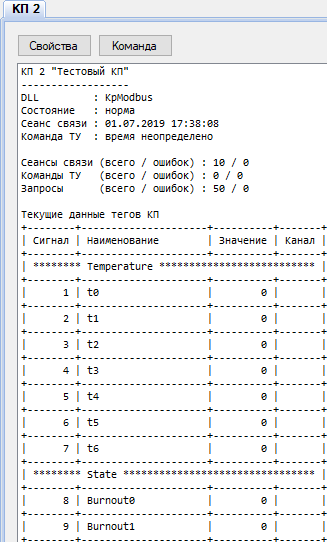
Рис. 10. Данные КП
При отсутствии связи с устройством используйте журнал линии связи для поиска причины проблемы. Чтобы открыть журнал, дважды щёлкните по элементу дерева Статистика линии, в открывшемся окне перейдите на страницу Журнал линии. С помощью онлайн инструмента Online Modbus Parser можно получить расшифровку пакетов данных, скопировав их на веб-форму из журнала линии связи.
После того, как связь с устройством установлена, необходимо создать входные каналы и каналы управления в базе конфигурации. Наиболее удобный способ создания каналов - использовать мастер, вызываемый кнопкой  . Если в систему добавляется несколько однотипных устройств, то ускорить работу можно с помощью инструмента клонирования каналов.
. Если в систему добавляется несколько однотипных устройств, то ускорить работу можно с помощью инструмента клонирования каналов.
Выполните шаги мастера (рис. 11-13), выбрав из выпадающих списков созданные ранее линию связи, КП и объект. Чтобы проверить, какие номера каналов доступны, используйте карту каналов на шаге 3.
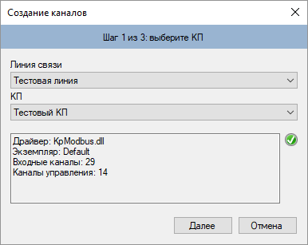
Рис. 11. Создание каналов. Шаг 1
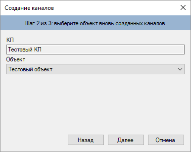
Рис. 12. Создание каналов. Шаг 2
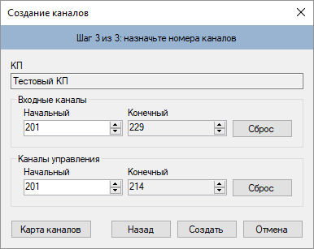
Рис. 13. Создание каналов. Шаг 3
При нажатии на кнопку Создать каналы будут созданы. Каналы создаются автоматически на основе шаблона устройства, который был создан и назначен КП в предыдущем разделе статьи. Посмотреть созданные каналы можно, открыв таблицу базы конфигурации Входные каналы > Тестовый КП или Каналы управления > Тестовый КП. Рекомендуется вручную заполнить поля Величина и Размерность для входных каналов и поле Значения команды для каналов управления. Однако в случае первого опыта это делать необязательно. Полезно понимать, что входные каналы привязываются к тегам КП с помощью поля Сигнал. Каналы управления привязываются к командам КП в соответствии с полем Номер команды.
После того, как редактирование базы конфигурации завершено, следует передать проект на сервер с помощью кнопки . Теперь откройте страницу данных КП в настройках Коммуникатора и убедитесь, что созданные входные каналы связаны с тегами КП – столбец Канал должен содержать номера созданных входных каналов (рис. 14).
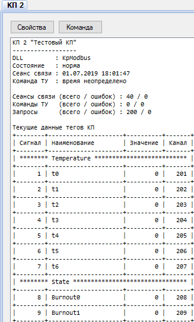
Рис. 14. Данные КП с привязкой каналов
В результате проделанных действий данные должны собираться с устройства и сохраняться в архив. Осталось настроить пользовательский интерфейс оператора.
Рассмотрим создание табличного представления для приложения Вебстанция. Если необходимо отобразить данные на мнемосхеме, действия по созданию представления будут аналогичны.
Щёлкните правой кнопкой на узле Интерфейс проводника проекта. Сначала в контекстном меню выберите Создать папку и создайте папку ModbusTest. Затем в контекстном меню созданной папки выберите Создать файл (рис. 15). В открывшемся окне установите табличный тип представления, укажите имя файла ModbusDevice.tbl и нажмите кнопку OK (рис. 16).
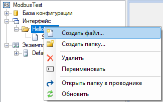
Рис. 15. Меню для создания представления
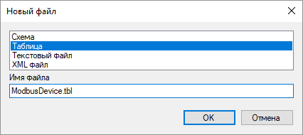
Рис. 16. Диалог для создания представления
Созданный файл представления появится в проводнике проекта. По двойному щелчку на файле откроется Редактор таблиц. Необходимо ввести заголовок и заполнить элементы представления, как показано на рис. 17. Сохраните изменения и закройте редактор.
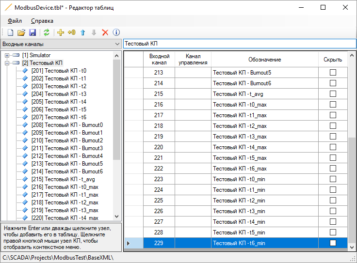
Рис. 17. Редактирование представления
После того, как файл представления создан, необходимо прописать в таблице Интерфейс базы конфигурации родительскую директорию и файл представления (рис. 18).
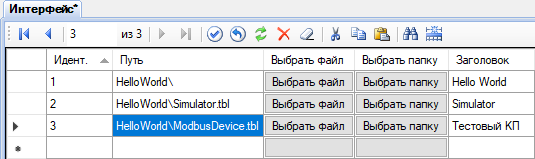
Рис. 18. Добавление представления в таблицу Интерфейс
Передайте проект на сервер с помощью кнопки . Теперь запустите браузер и введите адрес http://localhost/scada/. На форме входа в систему используйте логин admin и пароль 12345 (рис. 19). Если настройка выполнена правильно, то после входа в систему Вам будет доступна таблица с получаемыми от устройства данными (рис. 20).

Рис. 19. Вход в систему
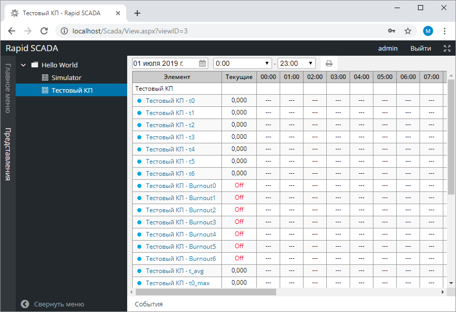
Рис. 20. Приложение Вебстанция
Каждый элемент Modbus, относящийся к таблицам Input Register и Holding Registers, состоит из двух байт. В зависимости от установленного для элемента типа полученные от устройства данные преобразуются в значение по-разному.
Если выбран 4-х байтный тип (uint, int, float), то значение элемента получается в результате преобразования 2-х элементов с идущими подряд адресами. Если выбран 8-и байтный тип (ulong, long, double), то значение получается в результате преобразования 4-х элементов.
Кроме того, можно задать порядок байт, в котором зашифровано значение, т.к. для различных устройств порядок байт может отличаться.
В ряде случаев для получения вещественных или отрицательных величин потребуется пересчёт, который выполняется Сервером. Способ пересчёта зависит от используемого устройства и должен указываться его производителем. Два распространённых варианта пересчёта для 2-х байтных значений без знака (ushort) приводятся ниже.
Пусть требуемое вещественное значение изменяется в диапазоне от A до B, X - полученное от устройства целое значение. Тогда пересчёт выполняется по следующей формуле:
X * (B - A) / 65536 + A.
Формулу следует ввести в поле Формула входного канала в базе конфигурации, установив для данного канала признак Исп. формулу. Например, значение измеряемого параметра изменяется в диапазоне от -40 до 160. Тогда формула для ввода в базу конфигурации получится:
Cnl*200/65536-40
Дополнительная информация о дополнительном коде (two’s complement) доступна на Википедии.
Пусть требуемое вещественное значение изменяется в диапазоне от A до B. При этом нижней границе соответствует целое значение A', получаемое от устройства, верхней границе – целое значение B', получаемое от устройства, а нулевому вещественному значению соответствует 0, получаемый от устройства. Значения A' и B' устанавливаются производителем устройства.
Если старший бит полученного значения X равен 0, т.е. X является положительным, то вещественное значение вычисляется по формуле:
X * B / B'.
Если старший бит полученного значения X равен 1, т.е. X является отрицательным, то вещественное значение вычисляется по формуле:
(~X | 128 + 1) * A / (~A' | 128 + 1),
где ~ - оператор побитового отрицания, | - оператор побитового ИЛИ.
Пример:
A = -210, A' = 56482 (0xDCA2), B = 760, B' = 32767 (0x7FFF).
Тогда формула для ввода в базу конфигурации:
Cnl<32768 ? Cnl*760/32767 : -(double)(ushort)(~(ushort)Cnl|128+1)*210/9182
Рекомендуется создать функцию, выполняющую описанный пересчёт, в таблице Формулы базы конфигурации, чтобы сократить последующую запись формул при многократном использовании:
double Convert(double x)
{
return x<32768 ? x*760/32767 : -(double)(ushort)(~(ushort)x|128+1)*210/9182;
}
Вызов этой функции в поле Формула таблицы Входные каналы:
Convert(Cnl)